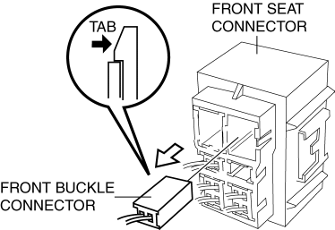
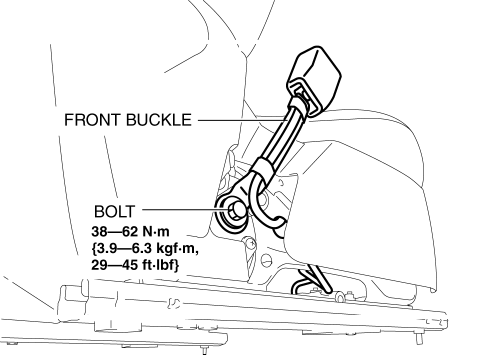
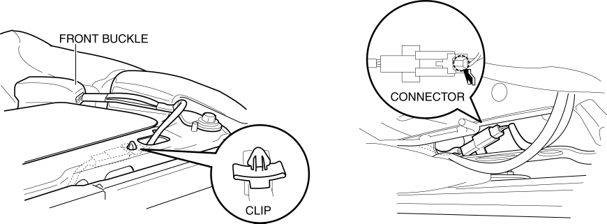
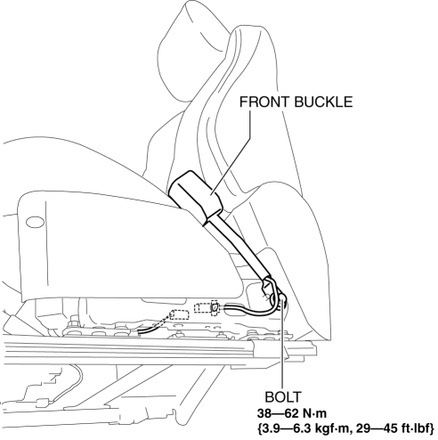

< Previous
Next >
2014 -
Mazda6 -
Restraints
FRONT BUCKLE REMOVAL/INSTALLATION
Driver-side
1. Disconnect the negative battery cable and wait for 1 min or more. (See NEGATIVE BATTERY CABLE DISCONNECTION/CONNECTION [SKYACTIV-G 2.5].)
2. Remove the front seat. (See FRONT SEAT REMOVAL/INSTALLATION.)
3. Disconnect the front buckle connector.

4. Remove the bolt.

5. Remove the front buckle.
6. Install in the reverse order of removal.
Passenger-side (with buckle switch)
1. Disconnect the negative battery cable and wait for 1 min or more. (See NEGATIVE BATTERY CABLE DISCONNECTION/CONNECTION [SKYACTIV-G 2.5].)
2. Remove the front seat. (See FRONT SEAT REMOVAL/INSTALLATION.)
3. Detach the clip.

4. Disconnect the connector.

5. Remove the bolt.
6. Remove the front buckle.
7. Install in the reverse order of removal.
< Previous
Next >
© 2012 Mazda North American Operations, U.S.A.